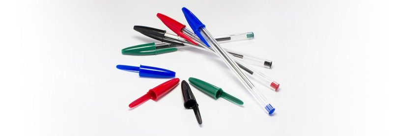

BICCristal Original
Penna a sfera
Il fusto trasparente e il cappuccio: una compagna per gli appunti di ogni giorno.
Dettagli e consigli
Una penna a sfera con cappuccio. Annota il colore dell’inchiostro che preferisci; punta e confezione si scelgono al banco.
Scheda del produttore